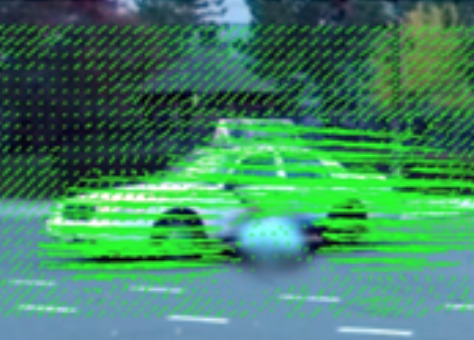
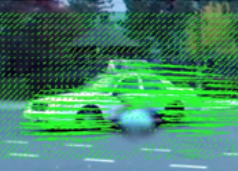

Robby T. Tan
Computer Vision Scientist and Assistant Professor at Yale-NUS College, Singapore
Home » Publication » Code » Teaching »
Computer Vision Scientist and Assistant Professor at Yale-NUS College, Singapore
Visibility in
Bad Weather
Physics-based Vision
Motion Analysis


Robust
Optical Flow Estimation of Double-Layer Images
under Transparency or Reflection
Jiaolong Yang, Hongdong Li, Yuchao Dai, Robby
T. Tan.
CVPR 2016, Las Vegas, USA.
Water Detection through Spatio-Temporal Invariant Descriptors
Pascal Mettes, Robby T. Tan, Remco Veltkamp
CVIU 2016
Consistent Foreground Co-Segmentation
Jiaming Guo, Loong-Fah Cheong, Robby T. Tan and Steven Zhiying Zhou
ACCV 2014, Singapore 

Raindrop Detection and Removal from Long Range Trajectories
Shaodi You, Robby T. Tan, Rei
Kawakami, Yasuhiro Mukaigawa, and Katsushi Ikeuchi
ACCV 2014, Singapore


Utrecht Multi-Person Motion Benchmark
N.P. van der Aa, X. Luo, G.J. Giezeman, Robby T. Tan, and
R.C. Veltkamp
Utrecht university technical report, 2011